CONTROLLERS

Controllers have smokes and utility for cover the map, with them the enemy can't see you
come
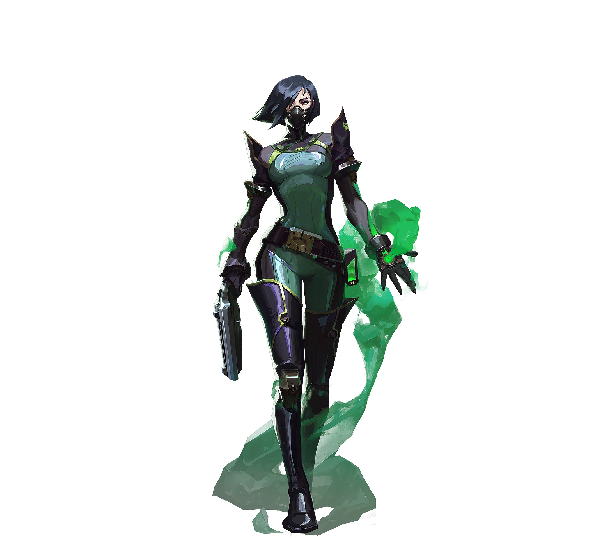
Viper is a controller from the United States that have venom smokes
that drain the HP of the enemies slowing the enemies rotations.
HABILITIES
SNAKE BITE

Launch a cilinder that get broken when touch the ground leaving a poison area
POISON CLOUD

Launch an orb that you can activate for appear a poison cloud on the
position that drain the enemies health when they are inside
TOXIC SCREEN

Deploy a gas emitter launcher, you can re-use the hability for raise a
screen that covers the vision
VIPERS PIT - ULTIMATE

Spray a chemical cloud in all directions around Viper, reducing the
vision range and the maximun health of the players inside of it
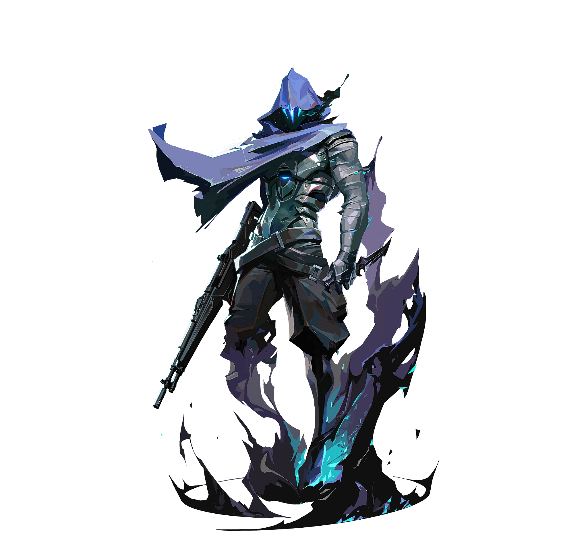
Omen is a controller created by Viper, he once was a human. He can put smokes from almost everywhere
in addition is the only controller with hight movility. He can teleport and blind enemies
HABILITIES
SHROUDED STEP

Teleport to the marked location
PARANOIA

Launch a shadow projectile forward, briefly reducing the vision range of all players it touches.
This projectile can pass straight through walls.
DARK COVER

Equip a shadow orb and see its range indicator. Fire to throw the shadow orb to the marked location,
creating a long-lasting shadow sphere that blocks vision.
FROM THE SHADOWS - ULTIMATE

Equip a tactical map. Fire to begin teleporting to the selected location. While teleporting,
Omen will appear as a Shade that can be destroyed by an enemy to cancel his teleport.

Ghanaian Agent Astra harnesses the energies of the cosmos to reshape battlefields to her whim. She can
place stars on the map for activete them after with her habilities,
HABILITIES
GRAVITY WELL

ACTIVATE a Star to form a Gravity Well. Players in the area are pulled toward the center before it explodes
NOVA PULSE

ACTIVATE a Star to detonate a Nova Pulse. The Nova Pulse charges briefly then strikes, concussing all players in its area.
NEBULA

ACTIVATE a Star to transform it into a smoke. USE a Star to Dissipate it, returning the Star to be placed in a new
location after a delay. Dissipate briefly forms a fake Nebula at the Star's location before returning.
ASTRAL FORM / COSMIC DIVIDE - ULTIMATE

ACTIVATE to enter Astral Form where you can place Stars with the FIRE button. Stars can be reactivated later, transforming them into a
Nova Pulse, Nebula, or Gravity Well. When Cosmic Divide is charged, use ALT FIRE in Astral Form to begin aiming it, then FIRE
to select two locations. An infinite Cosmic Divide connects the two points you select. Cosmic Divide blocks bullets and heavily dampens audio.
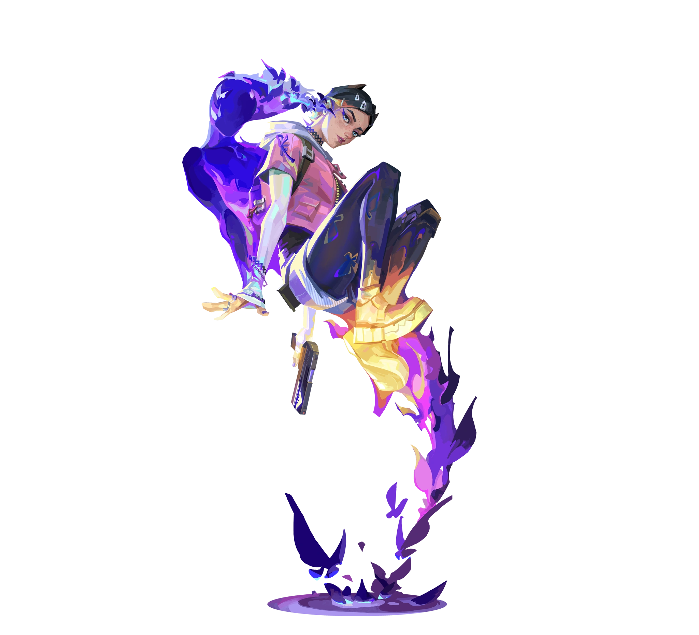
Scottish troublemaker Clove makes mischief for enemies in both the heat of combat and the cold of death. The young immortal keeps foes guessing,
even from beyond the grave with her ultimate
HABILITIES
MEDDLE

EQUIP a fragment of immortality essence. FIRE to throw the fragment, which erupts after a short delay and temporarily reduce the max
health of the enemy.
RUSE

EQUIP to view the battlefield. FIRE to set the locations where Clove's clouds will settle. ALT FIRE to confirm, launching clouds that
block vision in the chosen areas. Clove can use this ability after death.
PICK-ME-UP

INSTANTLY absorb the life force of a fallen enemy that Clove damaged or killed, gaining haste and temporary health.
NOT DEAD YET - ULTIMATE

After dying, ACTIVATE to resurrect. Once resurrected, Clove must earn a kill or a damaging assist within a set time
or she will die....... Again.
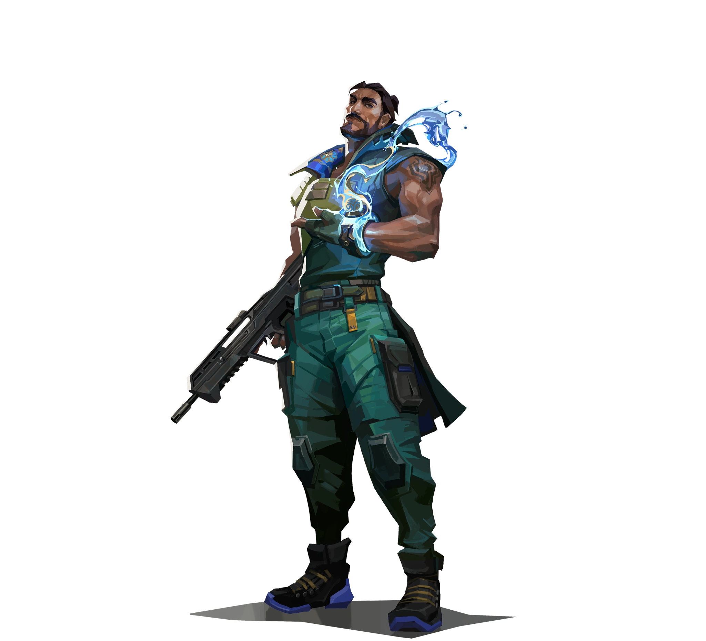
Hailing from India's coast, Harbor storms the field wielding ancient technology with dominion over water. He unleashes
frothing rapids and crushing waves to shield his allies, or pummel those that oppose him.
HABILITIES
COVE

EQUIP a sphere of shielding water. FIRE to throw. ALT FIRE to underhand throw. Upon impacting the ground, spawn a
destructible water shield that blocks bullets.
HIGH TIDE

EQUIP a wall of water. FIRE to send the water forward along the ground. HOLD FIRE to guide the water in the direction
of your crosshair, spawning a wall along the water's path. Players hit are SLOWED.
CASCADE

EQUIP a wave of water. FIRE to send the wave rolling forward and through walls. RE-USE to stop the wave. Players hit are SLOWED.
RECKONING - ULTIMATE

FIRE to summon a geyser pool on the ground. Enemy players in the area are targeted by
successive geyser strikes. Players caught within a strike are CONCUSSED.
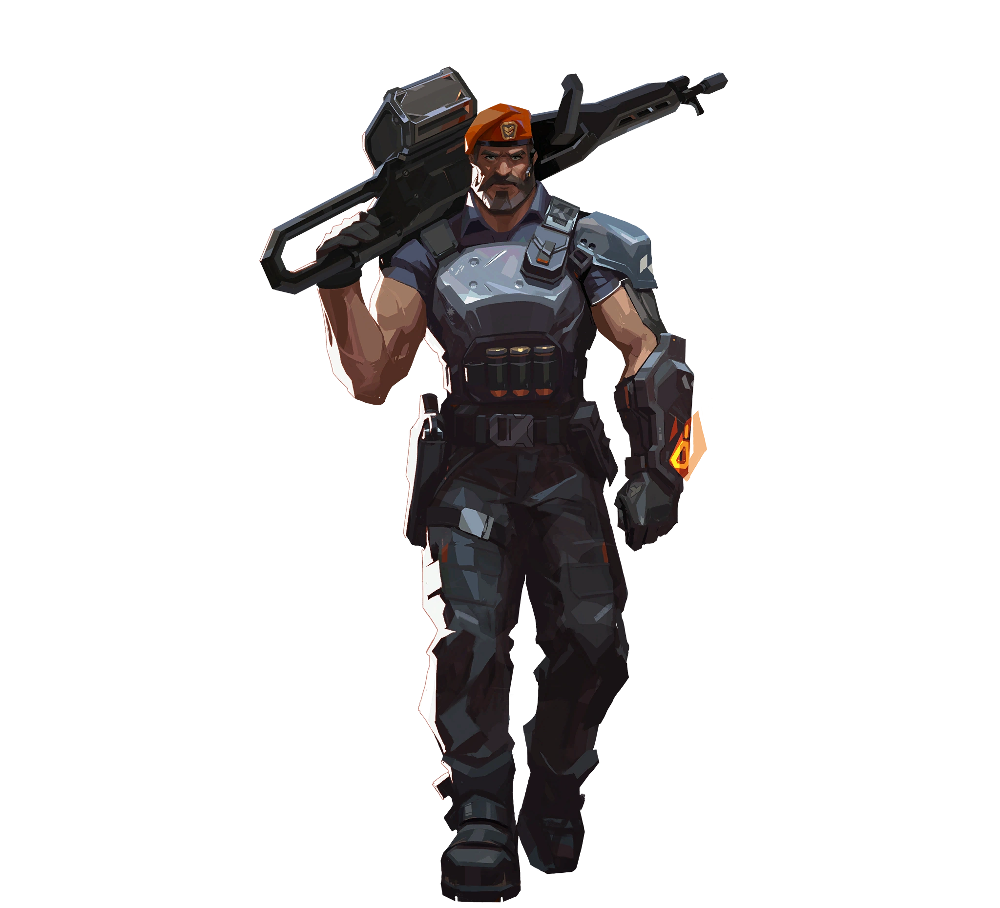
Joining from the U.S.A., Brimstone's orbital arsenal ensures his squad always has the advantage. His ability to deliver utility
precisely and safely make him the unmatched commander.
HABILITIES
INCENDIARY

EQUIP an incendiary grenade launcher. FIRE to launch a grenade that detonates as it comes to a rest on the floor, creating a lingering
fire zone that damages players within the zone.
SKY SMOKE

EQUIP a tactical map. FIRE to set locations where Brimstone's smoke clouds will land. ALT FIRE to confirm, launching long-lasting smoke
clouds that block vision in the selected area.
STIM BEACON

FIRE to toss the stim beacon in front of Brimstone. Upon landing, the stim beacon will create a field that grants
players RapidFire and movement speed.
ORBITAL STRIKE - ULTIMATE

EQUIP a tactical map. FIRE to launch a lingering orbital strike laser at the selected location, dealing high
damage-over-time to players caught in the selected area.
SENTINELS

Sentinels are specialists in hold a site of the map by themself, if you want to pass you need to think well how to
do it and dodge all the traps at the same time that you dodge bullets
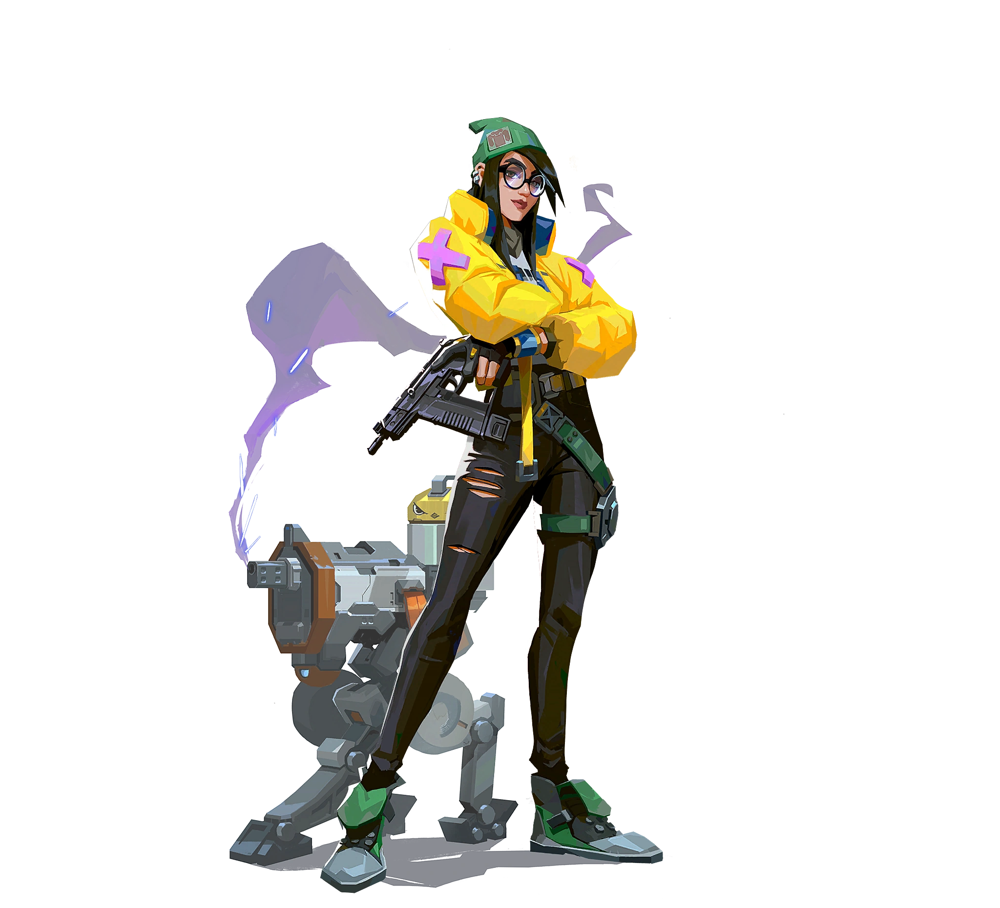
The genius of Germany. Killjoy secures the battlefield with ease using her arsenal of inventions. If the damage
from her gear doesn't stop her enemies, her robots' debuff will help make short work of them.
HABILITIES
ALARMBOT

EQUIP a covert Alarmbot. FIRE to deploy a bot that hunts down enemies that get in range. After reaching its target,
the bot explodes, applying Vulernable. HOLD EQUIP to recall a deployed bot.
TURRET

EQUIP a Turret. FIRE to deploy a turret that fires at enemies in a 180 degree cone. HOLD EQUIP to recall the deployed turret.
NANOSWARM

EQUIP a Nanoswarm grenade. FIRE to throw the grenade. Upon landing, the Nanoswarm goes covert. ACTIVATE the Nanoswarm to deploy
a damaging swarm of nanobots.
LOCKDOWN - ULTIMATE

EQUIP the Lockdown device. FIRE to deploy the device. After a long windup, the device Detains all enemies caught in the radius.
The device can be destroyed by enemies.
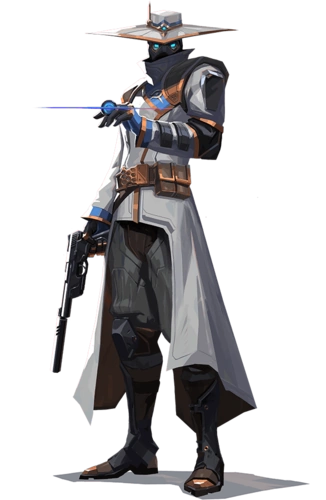
The Moroccan information broker, Cypher is a one-man surveillance network who keeps tabs on the enemy's every move.
No secret is safe. No maneuver goes unseen. Cypher is always watching.
HABILITIES
CYBER CAGE

INSTANTLY toss the cyber cage in front of Cypher. ACTIVATE to create a zone that blocks vision and plays an audio
cue when enemies pass through it.
SPYCAM

EQUIP a spycam. FIRE to place the spycam at the targeted location. RE-USE this ability to take control of the camera's
view. While in control of the camera, FIRE to shoot a marking dart. This dart will Reveal the location of any player
struck by the dart. This ability can be picked up to be REDEPLOYED
TRAPWIRE

EQUIP a trapwire. FIRE to place a destructible and covert trapwire at the targeted location, creating a line that spans
between the placed location and the wall opposite. Enemy players who cross a trapwire will be Tethered, Revealed, and
Concussed after a short period if they do not destroy the device in time. This ability can be picked up to be REDEPLOYED.
NEURAL THEFT - ULTIMATE

INSTANTLY use on a targeted dead enemy to download information on their team. After a brief delay, the location of all
living enemy players will be Revealed twice.
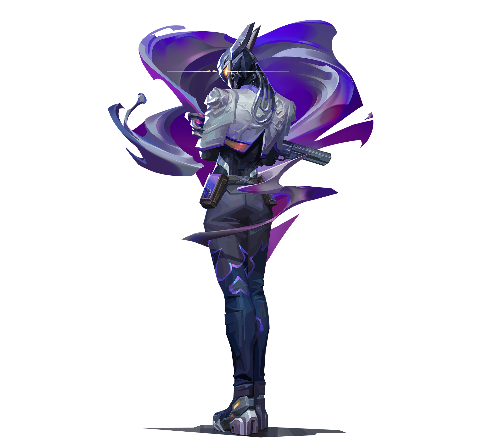
Metallic mastermind Vyse unleashes liquid metal to isolate, trap, and disarm her enemies. Through cunning and
manipulation, she forces all who oppose her to fear the battlefield itself.
HABILITIES
SHEAR

EQUIP filaments of liquid metal. FIRE to place a hidden wall trap. When an enemy crosses, an indestructible
wall bursts from the ground behind them. The wall lasts for a brief time before dissipating.
ARC ROSE

EQUIP an Arc Rose. Target a surface and FIRE to place a stealthed Arc Rose, or ALT FIRE to place the Arc Rose
through it. REUSE to blind all players looking at it. This ability can be picked up to be REDEPLOYED.
RAZORVINE

EQUIP a nest of liquid metal. FIRE to launch. Upon landing, the nest becomes invisible. When ACTIVATED, it sprawls
out into a large razorvine nest which slows and damages all players who move through it.
STEEL GARDEN - ULTIMATE

EQUIP a bramble of liquid metal. FIRE to send the metal erupting from you as a torrent of metal thorns, JAMMING
enemy primary weapons after a brief windup.
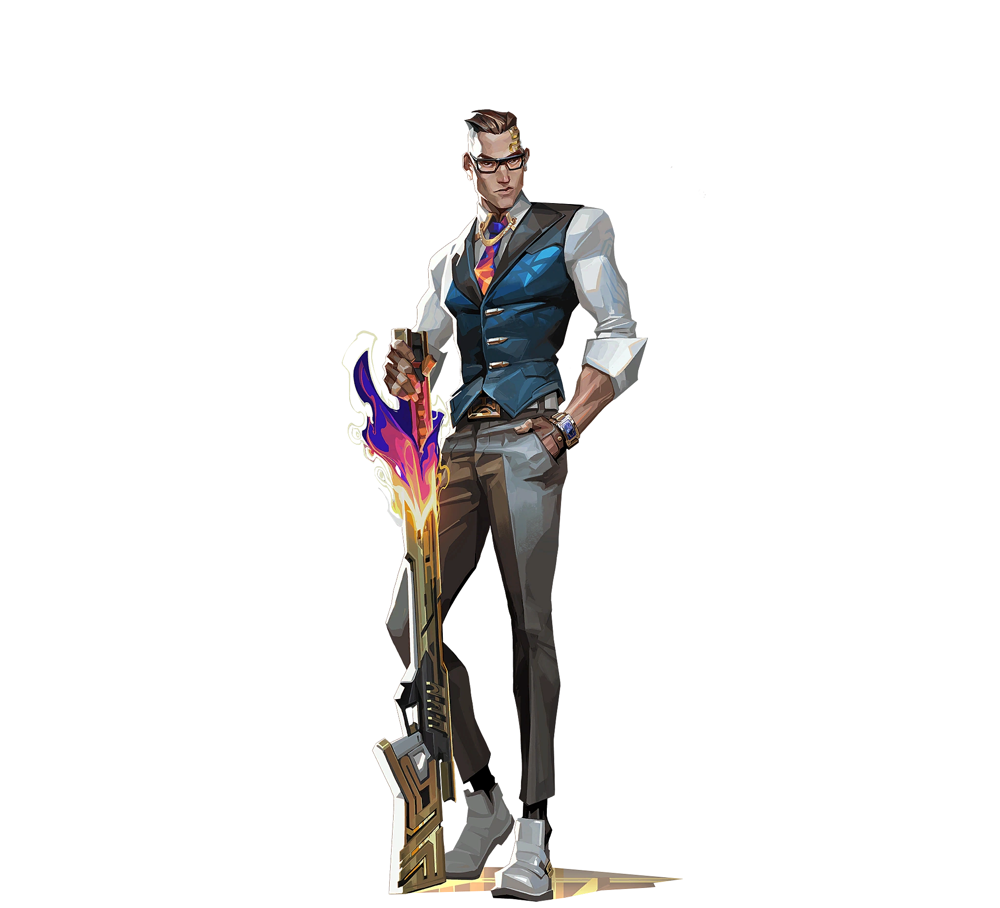
Well-dressed and well-armed, French weapons designer Chamber expels aggressors with deadly precision. He leverages
his custom arsenal to hold the line and pick off enemies from afar, with a contingency built for every plan.
HABILITIES
HEAD HUNTER

ACTIVATE to equip a heavy pistol. ALT FIRE with the pistol equipped to aim down sights.
RENDEZVOUS

EQUIP a teleport anchor. FIRE to place it on the ground. While on the ground and in range of the anchor, REACTIVATE
to quickly teleport to the anchor. The anchor can be picked up to be REDEPLOYED.
TRADEMARK

EQUIP a trap that scans for enemies. FIRE to place it on the ground. When a visible enemy comes in range, the trap
counts down and then destabilizes the terrain around them, creating a lingering field that Slows players caught
inside of it. The trap can be picked up to be REDEPLOYED.
TOUR DE FORCE - ULTIMATE

ACTIVATE to summon a powerful sniper rifle that will kill an enemy with any direct hit to the upper body.
ALT FIRE to aim down sights. Killing an enemy creates a lingering field that Slows players caught inside of it.
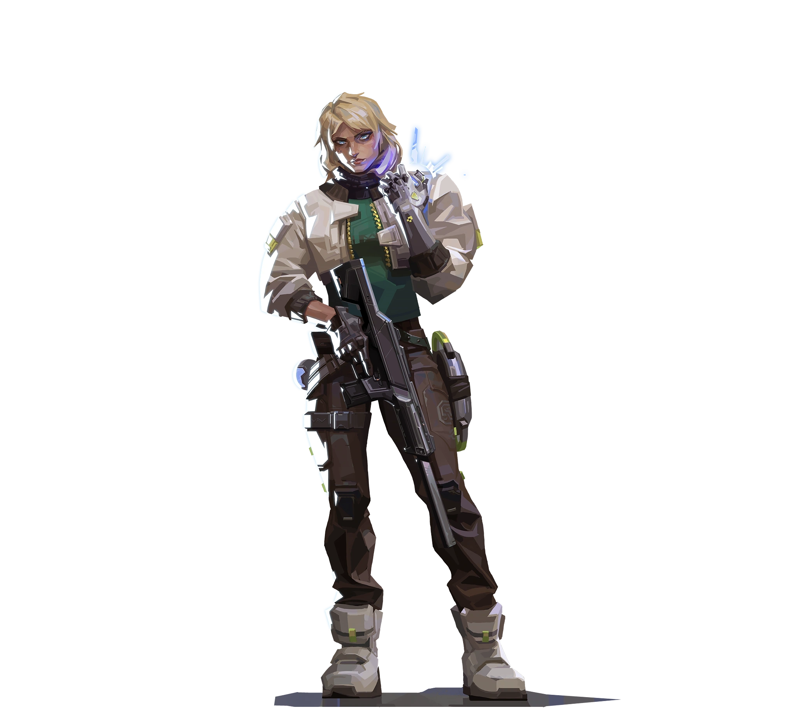
Norwegian operative Deadlock deploys an array of cutting-edge nanowire to secure the battlefield from even the
most lethal assault. No one escapes her vigilant watch, nor survives her unyielding ferocity.
HABILITIES
SONIC SENSOR

EQUIP a Sonic Sensor. FIRE to deploy. The sensor monitors an area for enemies making sound. It concusses that area
if footsteps, weapons fire, or significant noise are detected.
BARRIER MESH

EQUIP a Barrier Mesh disc. FIRE to throw forward. Upon landing, the disc generates barriers from the origin point
that block character movement.
GRAVNET

EQUIP a GravNet grenade. FIRE to throw. ALT FIRE to lob. The GravNet detonates upon landing, forcing any characters
caught within to crouch and move slowly.
Annihilation - ULTIMATE

EQUIP a Nanowire Accelerator. FIRE to unleash a pulse of nanowires that captures the first enemy contacted.
The cocooned enemy is pulled along a nanowire path and will die unless they are freed. The nanowire cocoon is destructible
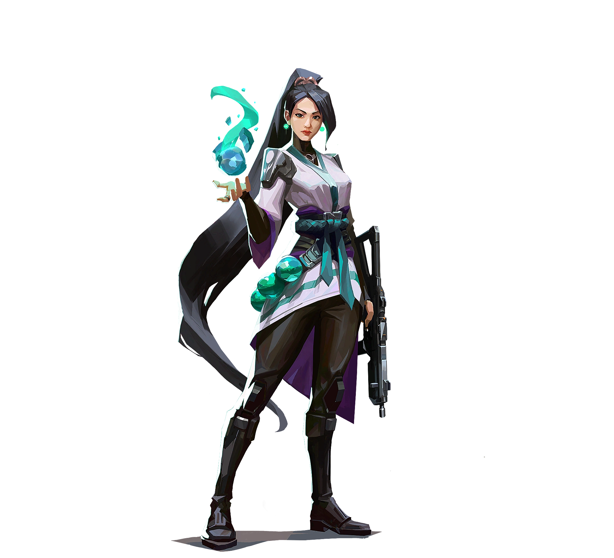
The stronghold of China, Sage creates safety for herself and her team wherever she goes. Able to revive fallen friends and stave off
aggressive pushes, she provides a calm center to a hellish fight.
HABILITIES
SLOW ORB

EQUIP a slowing orb. FIRE to throw a slowing orb forward that detonates upon landing, creating a lingering field that Slows and reduces
the dash speed of players caught inside of it.
HEALING ORB

EQUIP a healing orb. FIRE with your crosshairs over a damaged ally to activate a Heal-Over-Time on them. ALT FIRE while Sage is damaged
to activate a self Heal-Over-Time.
BARRIER ORB

EQUIP a barrier orb. FIRE places a wall that fortifies after a few seconds. ALT FIRE rotates the targeter.
RESURRECTION - ULTIMATE

EQUIP a resurrection ability. FIRE with your crosshairs placed over a dead ally to begin resurrecting them.
After a brief channel, the ally will be brought back to life with full health.
DUELIST

Duelists are the masters of the gun fights, they have a lot of habilities that help them to kill multiple enemies.
In good hands they can carry a game by themself
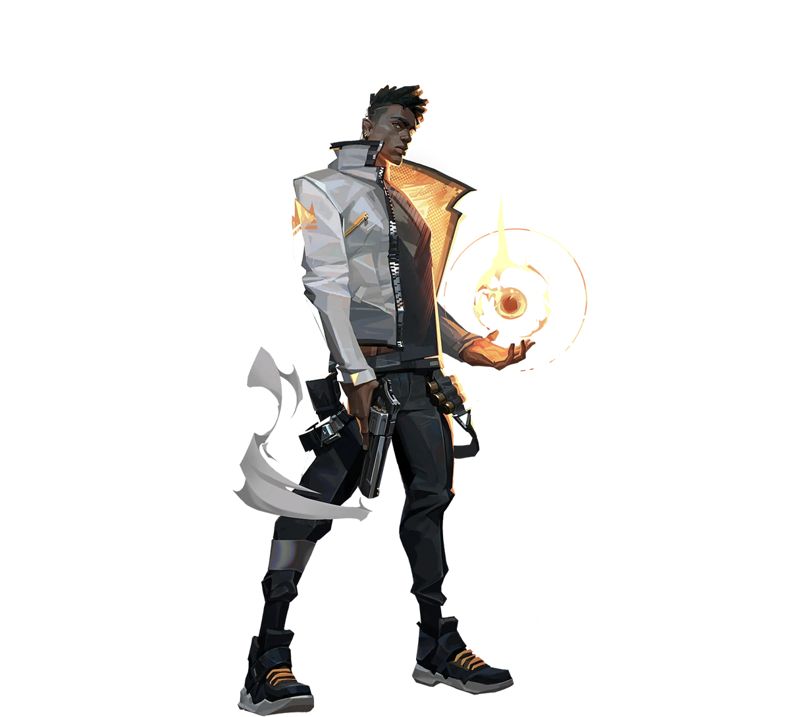
Hailing from the U.K., Phoenix's star power shines through in his fighting style, igniting the battlefield with flash
and flare. Whether he's got backup or not, he'll rush into a fight on his own terms.
HABILITIES
HOT HANDS

EQUIP a fireball. FIRE to throw a fireball that explodes after a set amount of time or upon hitting the ground,
creating a lingering fire zone that damages enemies and heal phoenix. ALT FIRE to lob.
Curveball

EQUIP a flare orb that takes a curving path and detonates shortly after throwing. FIRE to curve the flare orb
to the left, detonating and Blinding any player who sees the orb. ALT FIRE to curve the flare orb to the right.
Curveball resets a charge every two kills.
BLAZE

EQUIP a flame wall. FIRE to create a line of flame that moves forward, passing through the world and creating a wall
of fire that blocks vision and damages players passing through it and healing Phoenix. HOLD FIRE to bend the wall in
the direction of your crosshair.
RUN IT BACK - ULTIMATE

INSTANTLY place a marker at Phoenix's location. While this ability is active, dying or allowing the timer to expire
will end this ability and bring Phoenix back to this location with full health and the amount of armor he had when
the ability was cast. Imagine if Clove, Sage and Phoenix were on the same team.......
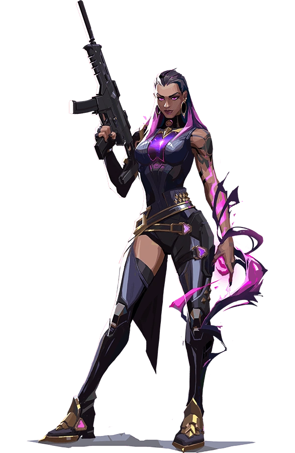
Forged in the heart of Mexico, Reyna dominates single combat, when she kills an enemy a soul orb will appear in
the dead enemy location. Her capability is only limited by her raw skill, making her highly dependent on performance.
HABILITIES
DEVOUR

INSTANTLY consume a nearby soul orb, rapidly Healing. If Empress Empress is active, this skill will automatically
cast and not consume the Soul Orb.
DISMISS

INSTANTLY consume a nearby Soul Orb, becoming Intangible for a short duration. If Empress Empress is active, also become Invisible.
LEER

EQUIP an ethereal, destructible eye. ACTIVATE to cast the eye a short distance forward. The eye will Nearsight all enemies who look at it.
EMPRESS - ULTIMATE

INSTANTLY enter a frenzy, gaining a Combat Stim that increases firing, equip and reload speed dramatically. Gain infinite charges of Soul
Harvest abilities.
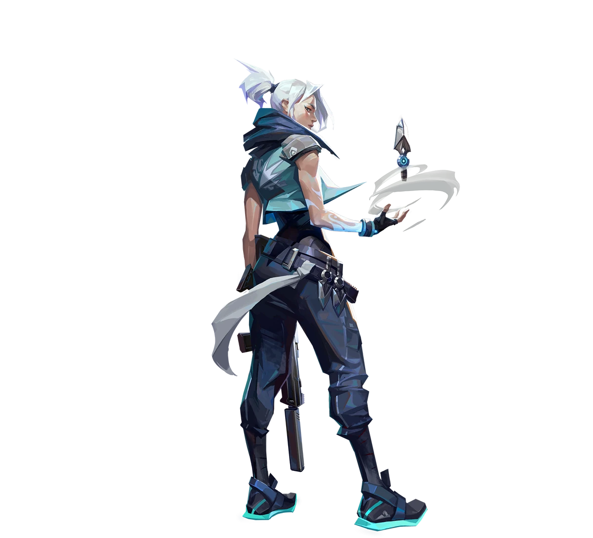
Representing her home country of South Korea, Jett's agile and evasive fighting style lets her take risks no one else can. She runs circles
around every skirmish, cutting enemies before they even know what hit them.
HABILITIES
DRIFT

Holding the jump button while falling allows you to glide through the air.
UPDRAFT

INSTANTLY propel Jett high into the air.
TAILWIND

ACTIVATE to prepare a gust of wind for a limited time. RE-USE the wind to propel Jett in the direction she is moving. If Jett is standing still,
she propels forward. Tailwind charge resets every two kills.
CLOUDBURST

INSTANTLY throw a projectile that expands into a brief vision-blocking cloud on impact with a surface. HOLD the ability key to curve the smoke
in the direction of your crosshair.
BLADE STORM - ULTIMATE

EQUIP a set of highly accurate throwing knives. FIRE to throw a single knife and recharge knives on a kill. ALT FIRE to throw all remaining
daggers but does not recharge on a kill.
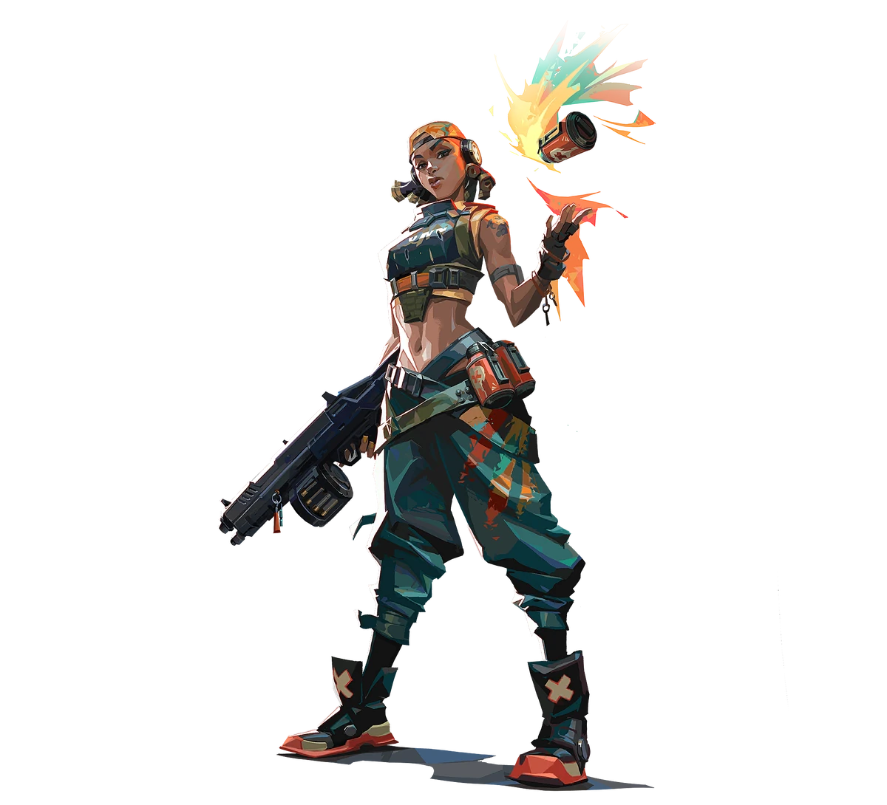
Raze explodes out of Brazil with her big personality and big guns. With her blunt-force-trauma playstyle, she excels at flushing entrenched
enemies and clearing tight spaces with a generous dose of "boom."
HABILITIES
BLAST PACK

INSTANTLY throw a Blast Pack that will stick to surfaces. RE-USE the ability after deployment to detonate,
damaging and moving anything hit. Raze dont take damage from the ability
PAINT SHELLS

EQUIP a cluster grenade. FIRE to throw the grenade, which does damage and creates sub-munitions, each doing
damage to anyone in their range. ALT FIRE to lob. Paint Shells charge resets every two kills.
BOOM BOT

EQUIP a Boom Bot. FIRE will deploy the bot, causing it to travel in a straight line on the ground, bouncing
off walls. The Boom Bot will lock on to any enemies in its frontal cone and chase them, exploding for heavy damage if it reaches them.
SHOWSTOPPER - ULTIMATE

EQUIP a rocket launcher. FIRE to shoot a rocket that does massive area damage on contact with anything.
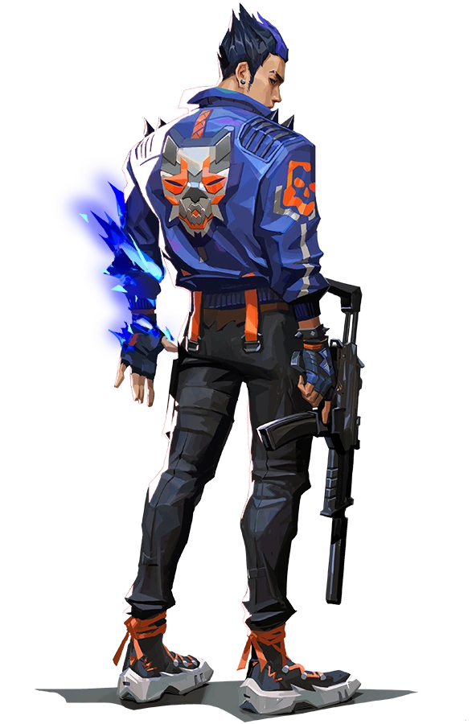
Japanese native, Yoru, rips holes straight through reality to infiltrate enemy lines unseen. Using deception and aggression in equal measure,
he gets the drop on each target before they know where to look.
HABILITIES
BLINDSIDE

EQUIP to rip an unstable dimensional fragment from reality. FIRE to throw the fragment, activating a flash that winds up once it collides
with a hard surface.
GATECRASH

EQUIP a rift tether. FIRE to send the tether forward. ALT FIRE to place a stationary tether. ACTIVATE to teleport to the tether's location.
USE to trigger a fake teleport. GATECRASH resets a charge every two kills.
FAKEOUT

EQUIP an echo that transforms into a mirror image of Yoru when activated. FIRE to instantly activate the mirror image and send it forward.
ALT FIRE to place an inactive echo. USE to transform an inactive echo into a mirror image and send it forward. Mirror images explode in
a Blinding Flash when destroyed by enemies.
DIMENTIONAL DRIFT - ULTIMATE

EQUIP a mask that can see between dimensions. FIRE to drift into Yoru's dimension, unable to be affected or seen by enemies from the outside.
REACTIVATE to exit Yoru's dimension early.
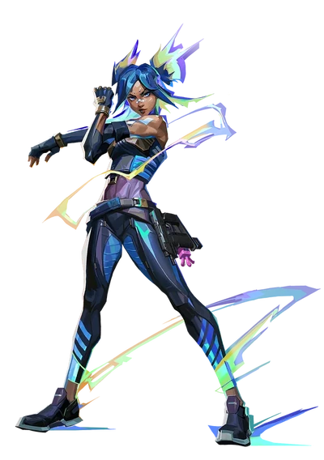
Filipino Agent Neon surges forward at shocking speeds, discharging bursts of bioelectric radiance as fast as her body generates it.
She races ahead to catch enemies off guard, then strikes them down quicker than lightning.
HABILITIES
ENERGY
Using High Gear and Overdrive consumes Energy. Killing an enemy agent instantly refills Energy.
RELAY BOLT

INSTANTLY throw an energy bolt that bounces once. Upon hitting each surface, the bolt electrifies the
ground below with a Concussive blast.
HIGH GEAR

INSTANTLY channel Neon's power for Increased Speed. When charged, ALT FIRE to trigger an electric slide dash.
Slide charge resets every two kills.
FAST LANE

FIRE two energy lines forward on the ground that extend a short distance or until they hit a surface.
The lines rise into walls of static electricity that block vision.
OVERDRIVE - ULTIMATE

Unleash Neon's full power and speed for a short duration. FIRE to channel the power into a deadly
lightning beam with high movement accuracy.
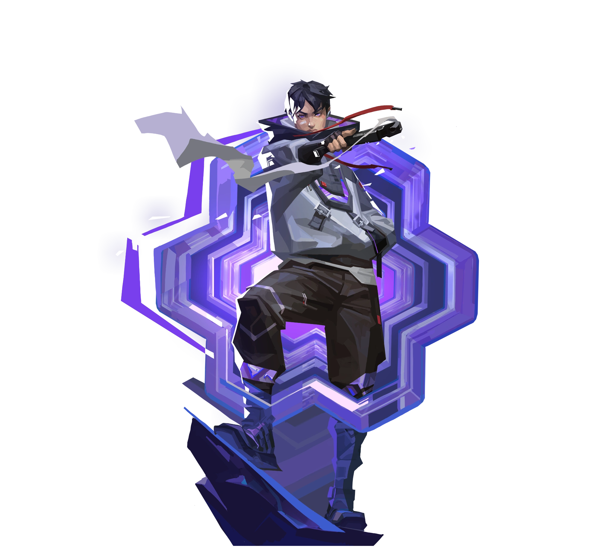
Chinese fixer for hire, Iso falls into a flow state to dismantle the opposition. Reconfiguring ambient
energy into bulletproof protection, he advances with focus towards his next duel to the death.
HABILITIES
UNDERCUT

EQUIP a molecular bolt. Fire to throw it forward, briefly applying Vulnerable to all players it touches.
The bolt can pass through solid objects, including walls.
DOUBLE TAP

INSTANTLY start channeling your focus. Once focused: gain a shield which absorbs one instance of damage
from any source, and enter a flow state during which downed enemies you kill or damage spawn an energy orb.
Shooting this orb refreshes your flow state and your existing shield, or grants another.
CONTINGENCY

EQUIP to assemble prismatic energy. FIRE to push an indestructible wall of energy forward that blocks bullets.
KILL CONTRACT - ULTIMATE

EQUIP an interdimensional arena. FIRE to hurl a column of energy through the battlefield, pulling you and the
first enemy hit into the arena. You and your opponent duel to the death.
Initiator

Initiators are specialist on help the team to enter to a site or kill all the enemies, with flashes, reveals and stuns
they can break all the enemies defenses, and help the Duelist to enter easily to the sites
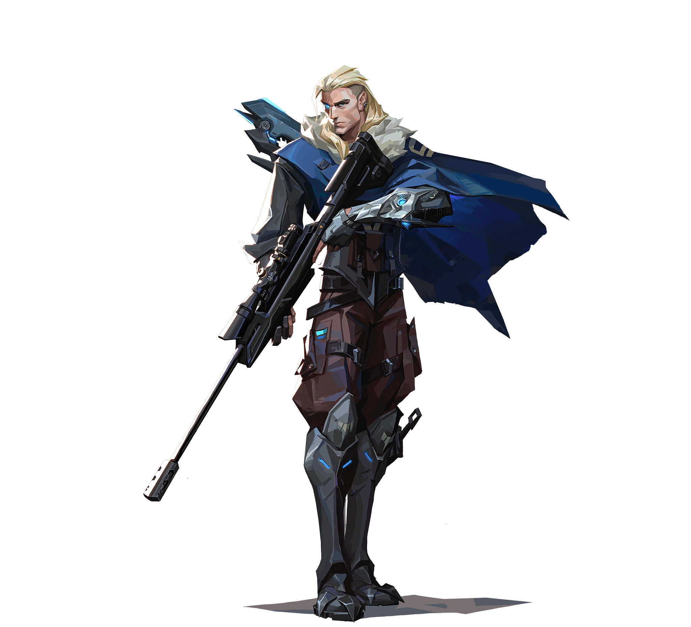
Born from the eternal winter of Russia's tundra, Sova tracks, finds, and eliminates enemies with ruthless efficiency and precision.
His custom bow and incredible scouting abilities ensure that even if you run, you cannot hide.
HABILITIES
SHOCK BOLT

EQUIP a bow with a shock bolt. FIRE to send the explosive bolt forward, detonating upon collision and damaging players nearby.
HOLD FIRE to extend the range of the projectile. ALT FIRE to add up to two bounces to this arrow.
RECON BOLT

EQUIP a bow with a recon bolt. FIRE to send the recon bolt forward, activating upon collision and Revealing the location of
nearby enemies caught in the line of sight of the bolt. Enemies can destroy this bolt. HOLD FIRE to extend the range of the projectile.
ALT FIRE to add up to two bounces to this arrow.
OWL DRONE

EQUIP an owl drone. FIRE to deploy and take control of movement of the drone. While in control of the drone, FIRE to shoot a marking dart.
This dart will Reveal the location of any player struck by the dart. Enemies can destroy the Owl Drone.
HUNTER'S FURY - ULTIMATE

EQUIP a bow with three long-range, wall-piercing energy blasts. FIRE to release an energy blast in a line in front of Sova, dealing damage
and Revealing the location of enemies caught in the line. This ability can be RE-USED up to two more times while the ability timer is active.
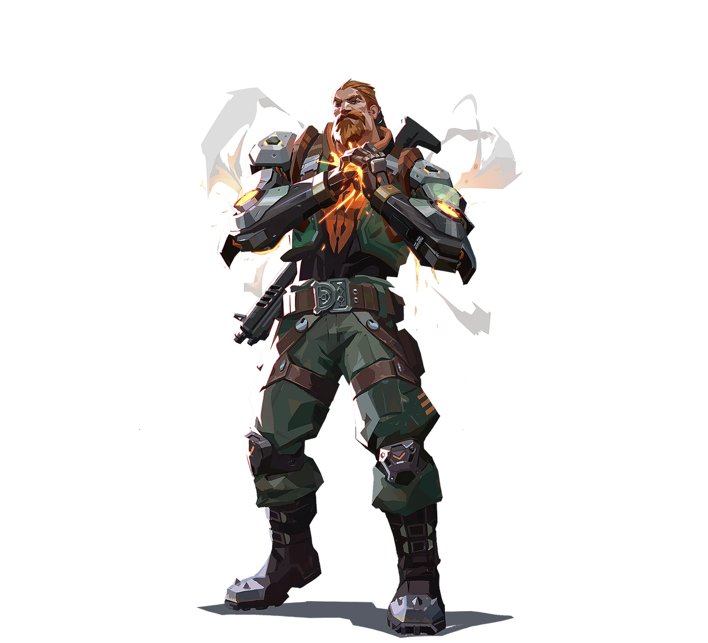
Breach, the bionic Swede, fires powerful, targeted kinetic blasts to aggressively clear a path through enemy ground. The damage and disruption
he inflicts ensures no fight is ever fair.
HABILITIES
FLASHPOINT

EQUIP a blinding charge. FIRE the charge to set a fast-acting burst through the wall. The charge detonates to Blind all players looking at it.
FAULT LINE

EQUIP a seismic blast. HOLD FIRE to increase the distance. RELEASE to set off the quake, Concussing all players in its zone and in a line up to
the zone.
AFTERSHOCK

EQUIP a fusion charge. FIRE the charge to set a slow-acting burst through the wall. The burst does heavy damage to anyone caught in its area.
ROLLING THUNDER - ULTIMATE

EQUIP a Seismic Charge. FIRE to send a cascading quake through all terrain in a large zone. The quake Concusses and knocks up anyone caught in it.
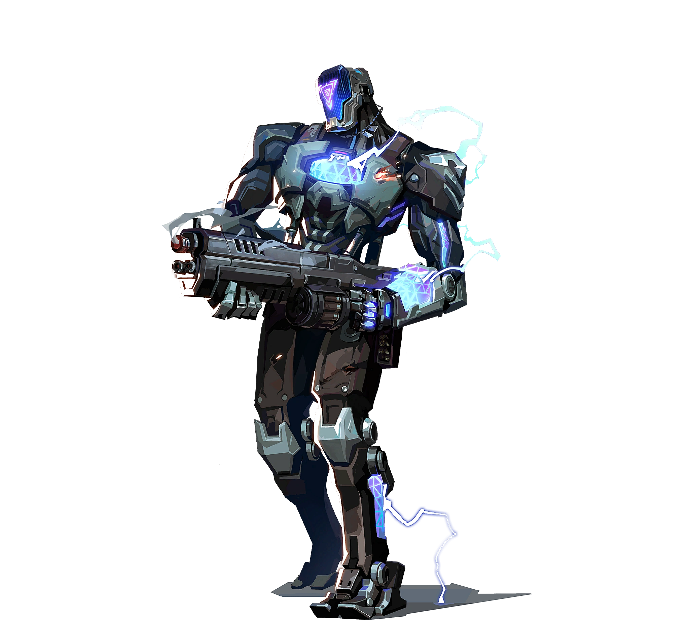
KAY/O is a machine of war built for a single purpose: neutralizing radiants. His power to Suppress enemy abilities dismantles his opponents' capacity
to fight back, securing him and his allies the ultimate edge.
HABILITIES
FLASH DRIVE

EQUIP a flash grenade. FIRE to overhand throw. ALT FIRE to lob a weaker version that explodes quickly. The flash grenade explodes after a
short fuse, Blinding anyone in line of sight.
ZERO POINT

EQUIP a suppression blade. FIRE to throw. The blade sticks to the first surface it hits, winds up, and Suppresses (can't use abilities)
anyone in the radius of the explosion. Enemies can destroy this blade.
FRAG/MENT

EQUIP an explosive fragment. FIRE to throw. ALT FIRE to lob. The fragment sticks to the floor and explodes multiple times,
dealing near lethal damage at the center with each explosion.
NULL/CMD - ULTIMATE

INSTANTLY Overload with polarized radianite energy that pulses from KAY/O in a massive radius. Enemies hit with pulses are
Suppressed for a short duration. While overloaded, KAY/O gains Combat Stim and can be re-stabilized if downed.
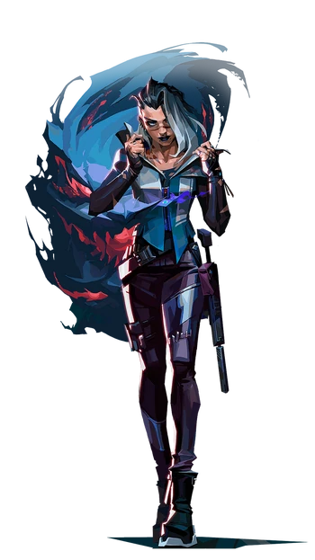
Turkish bounty hunter, Fade, unleashes the power of raw nightmares to seize enemy secrets. Attuned with terror itself,
she hunts targets and reveals their deepest fears—before crushing them in the dark.
HABILITIES
TERROR TRAIL
Abilities that apply Terror Trail Mark enemies, causing their position and movements to be tracked by dark mist.
Prowlers can be used to pursue trails.
SEIZE

EQUIP a knot of raw fear. FIRE to throw. The knot drops down after a set time. RE-USE to drop the knot early.
The knot ruptures on impact, holding nearby enemies in place. Held enemies are Deafened, and Decayed.
HAUNT
EQUIP a haunting watcher. FIRE to throw. The watcher drops down after a set time. RE-USE to drop the watcher early.
The watcher lashes out on impact, Revealing enemies in its line of sight and creating terror trails to them.
Enemies can destroy the watcher.
PROWLER

EQUIP a prowler. FIRE to send the prowler forward. HOLD FIRE to steer the prowler towards your crosshair.
The prowler will chase down the first enemy or terror trail it sees, and nearsight the enemy on impact.
NIGHTFALL - ULTIMATE

EQUIP the power of nightmare itself. FIRE to unleash a wave of unstoppable nightmare energy. Enemies
caught in the wave are Marked by terror trails, Deafened, and Decayed.
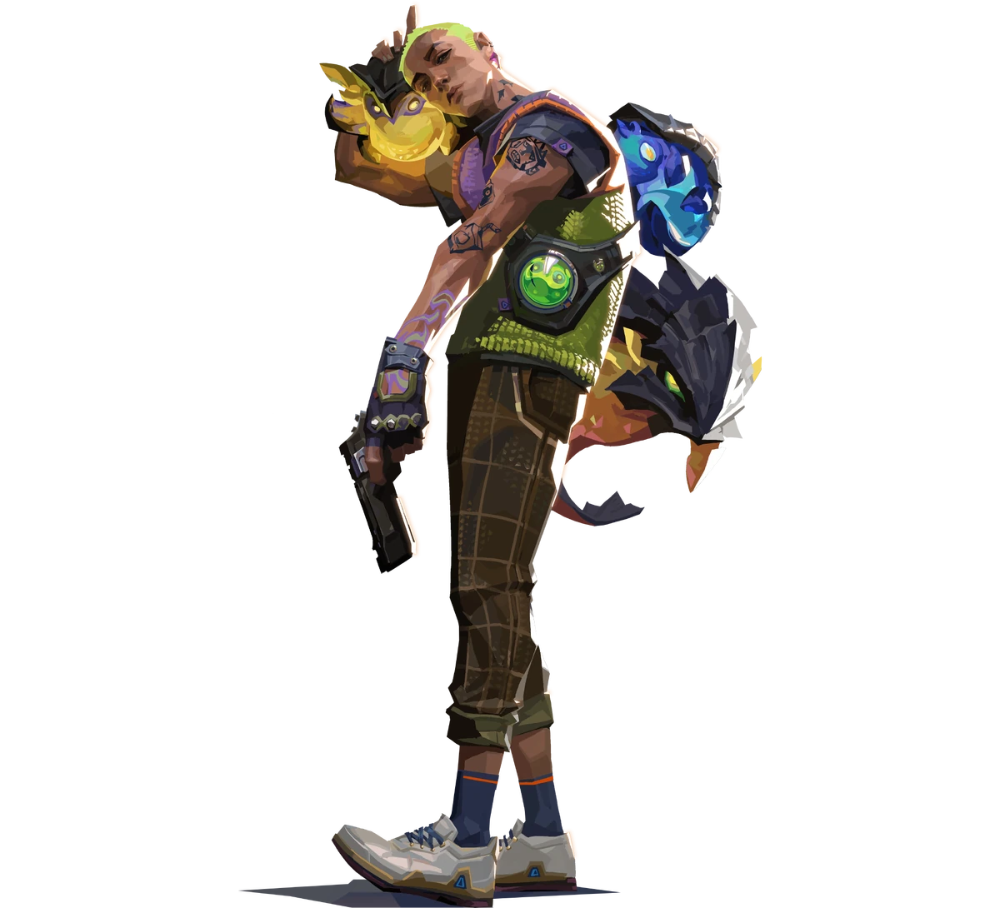
Gekko the Angeleno leads a tight-knit crew of calamitous creatures. His buddies bound forward,
scattering enemies out of the way, with Gekko chasing them down to regroup and go again.
HABILITIES
GLOBULES
When Wingman, Dizzy, and Thrash expire they revert into a dormant globule.
INTERACT to reclaim the globule and gain another charge after a short cooldown. Thrash can only be reclaimed once.
WINGMAN
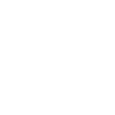
EQUIP Wingman. FIRE to send Wingman forward seeking enemies. Wingman unleashes a Concussive blast toward the first enemy he sees.
ALT FIRE when targeting a Spike site or planted Spike to have Wingman defuse or plant the Spike. To plant,
Gekko must have the Spike in his inventory.
DIZZY
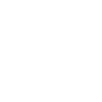
EQUIP Dizzy. FIRE to send Dizzy soaring forward through the air. Dizzy charges then unleashes plasma blasts at enemies in line of sight.
Enemies hit by her plasma are Blinded.
MOSH PIT
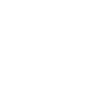
EQUIP Mosh. FIRE to throw Mosh like a grenade. ALT FIRE to lob. Upon landing Mosh duplicates across a large area that deals a small
amount of damage over time then after a short delay explodes.
THRASH - ULTIMATE
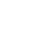
EQUIP Thrash. FIRE to link with Thrash's mind and steer her through enemy territory. ACTIVATE to lunge forward and explode,
Detaining any players in a small radius.
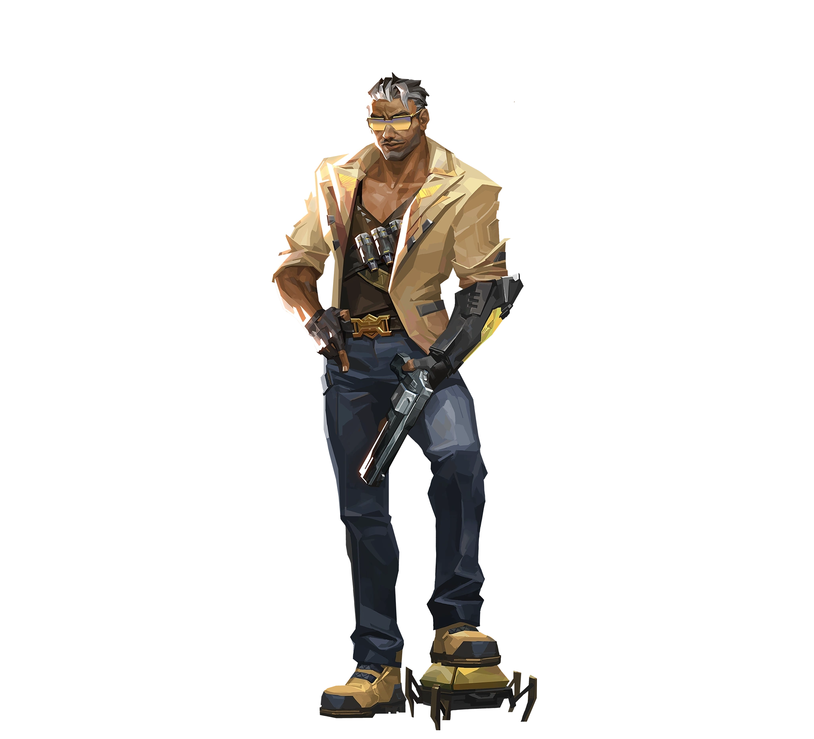
A veteran intelligence consultant from Colombia, Tejo's ballistic guidance system pressures the enemy to relinquish their
ground - or their lives. His targeted strikes keep opponents off balance and under his heel.
HABILITIES
SPECIAL DELIVERY

EQUIP a sticky grenade. FIRE to launch. The grenade sticks to the first surface it hits and explodes, Concussing any targets
caught in the blast. ALT FIRE to launch the grenade with a single bounce instead.
GUIDED SALVO

EQUIP an AR targeting system. FIRE to select up to two target locations on the map. ALT FIRE to launch missiles that autonomously
navigate to target locations, detonating on arrival.
STEALTH DRONE

EQUIP a stealth drone. FIRE to throw the drone forward, assuming direct control of its movement. FIRE again to trigger a pulse
that Suppresses and Reveals enemies hit.
ARMAGEDDON - ULTIMATE

EQUIP a tactical strike targeting map. FIRE to select the origin point of the strike. FIRE again to set the end point and launch
attack, unleashing a wave of explosions along the strike path. ALT FIRE during map targeting to cancel the origin point.
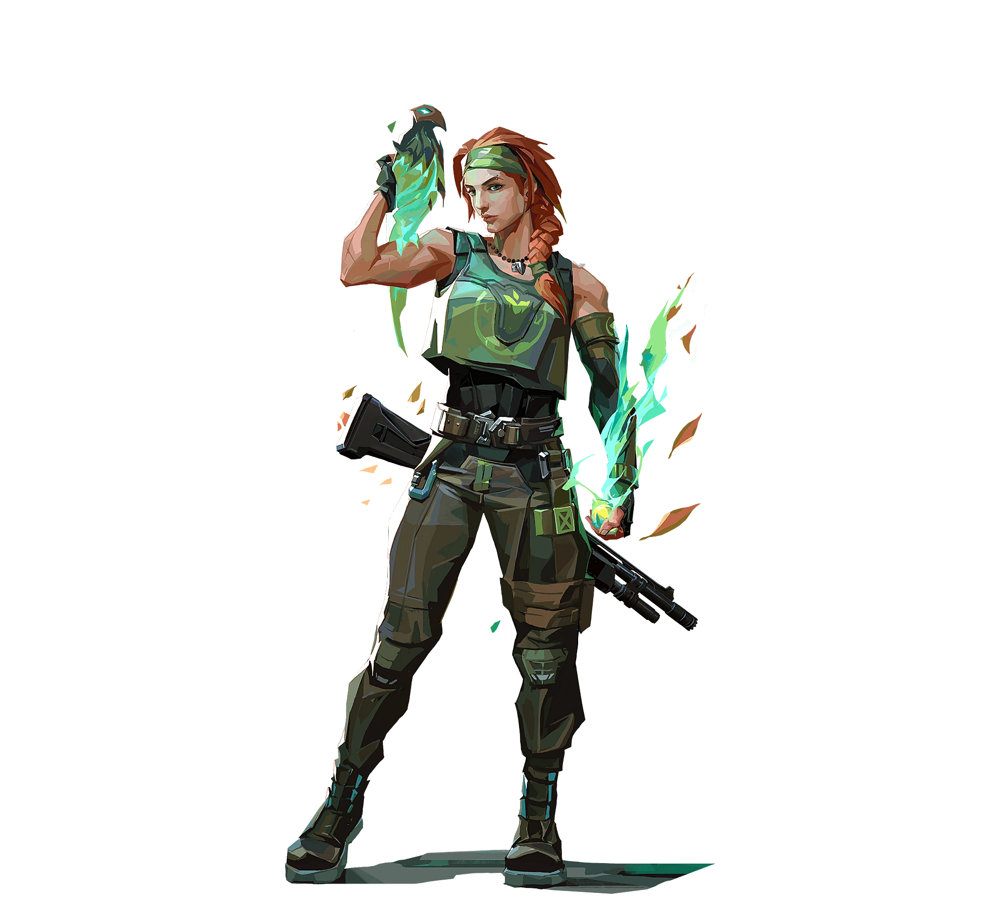
Hailing from Australia, Skye and her band of beasts trail-blaze the way through hostile territory. With her creations hampering the
enemy, and her power to heal others, the team is strongest and safest by Skye’s side.
HABILITIES
TRAILBLAZER

EQUIP a Tasmanian tiger trinket. FIRE to send out and take control of the predator. While in control, FIRE to leap forward,
exploding in a Concussive blast and damaging directly hit enemies.
GUIDING LIGHT

EQUIP a hawk trinket. FIRE to send it forward. HOLD FIRE to guide the hawk in the direction of your crosshair. RE-USE while
the hawk is in flight to transform it into a flash. The flash reaches max potency after a short duration during the hawk's flight.
REGROWTH

EQUIP a healing trinket. HOLD FIRE to channel, Healing allies in range and line of sight. Can be reused until her healing pool
is depleted. Skye cannot heal herself.
SEEKERS - ULTIMATE

EQUIP a Seeker trinket. FIRE to send out three Seekers to track down the three closest enemies. If a Seeker reaches its target,
it Nearsights them. Enemies can destroy the Seekers.